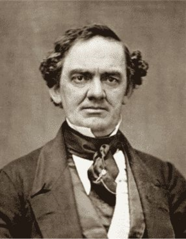
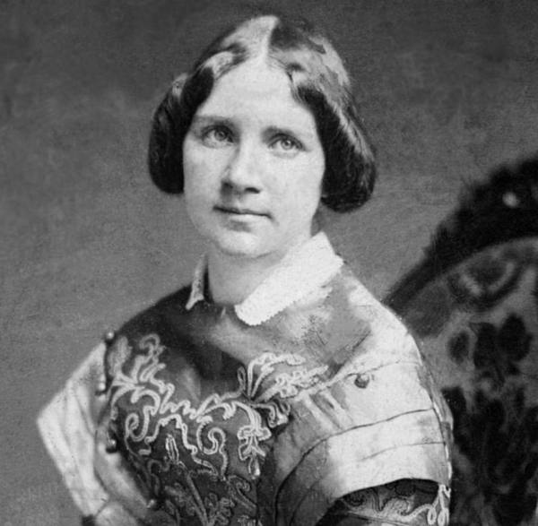

P.T BARNUM / HUGH JACKMAN
영화의 모티브가 된 인물이자 쇼비즈니스의 창시자
CHARITY / MICHELLE WILLIAMS
바넘의 아내
PHILIP CARLYLE / ZAC EFRON
바넘의 동업자이자 후계자
LETTY LUTZ / KEALA SETTLE
여성임에도 불구하고 털이 많았던 가수

JENNY RIND / REBECCA FERGUSON
스웨덴의 나이팅게일이라고 불리우는 소프라노 가수
TOM THUMB / SAM HUMPHREY
가장 인기가 많아 빅토리아 여왕에게 초청 받은 인물
ANNE WHEELER / ZENDAYA
가상의 인물로서 매력적인 서커스 단원
많은 비중을 차지하진 않았지만
실제 다모증 환자의 공연은 인기가 많았다고 한다.